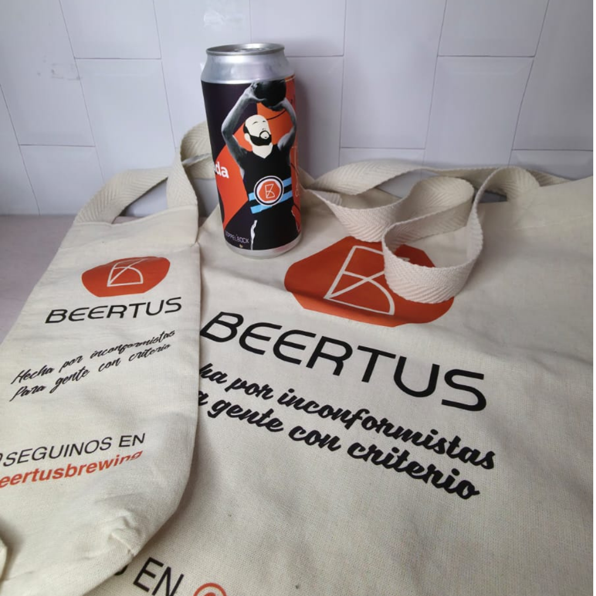

Micaela Suarez
Diseñadora y Comunicadora Visual en proceso
Estudiante de Diseño y Comunicación Visual
en la Universidad Nacional de Lanús.
Estudiante de Diseño y Comunicación Visual
en la Universidad Nacional de Lanús.

Hola, soy Micaela. Estudio Diseño y Comunicación Visual en la UNLa y me apasiona explorar el diseño en todas sus formas.
Me gusta estar en constante movimiento, seguir aprendiendo y encontrar nuevos espacios donde experimentar y crear.
Diseño gráfico, atención al público y trabajo de taller hace 3 años.
Desarrollo de piezas gráficas para una agencia de Marketing hace 10 meses.
Trabajo con estampado, sublimación y papelería hace 5 años.
Ayudante de la cátedra Shocron en Tecnología Gráfica hace 1 año.
Universidad Nacional de Lanús · En curso
Community Manager & Publicidad Flex · E-commerce · Branding
Me gusta leer, pintar, estar con mis gatos y salir a pasear. Disfruto aprender cosas nuevas y mantenerme siempre en movimiento.

Estampado de bolsas para el packaging de Beertus Cerveza.
